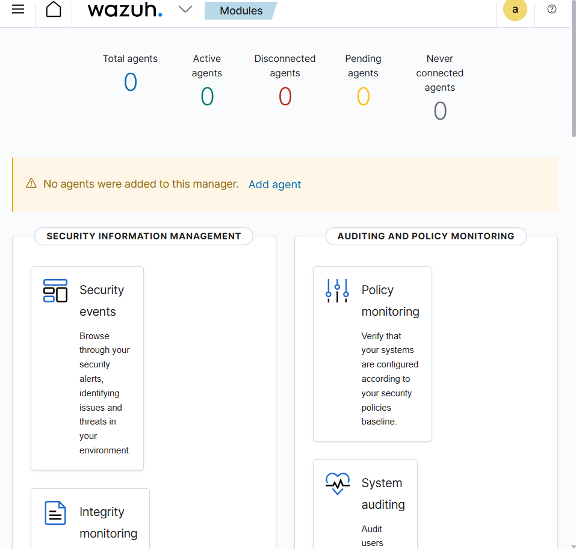

Diciembre 2025
Este proyecto consistió en el despliegue de un entorno SIEM (Security Information and Event Management) utilizando el stack de Wazuh sobre contenedores Docker en un entorno Kali Linux (WSL2). El objetivo fue centralizar la seguridad y el monitoreo de endpoints.

Durante la instalación, me enfrenté a un problema crítico de autenticación donde las credenciales por defecto del archivo docker-compose.yml no eran aceptadas por el sistema.
internal_users.yml estaba bloqueado (Device busy) por el contenedor, utilicé técnicas de redirección de flujo (cat >) para sobrescribir la configuración sin detener el servicio.securityadmin.sh) para forzar la actualización de la base de datos de usuarios en memoria.